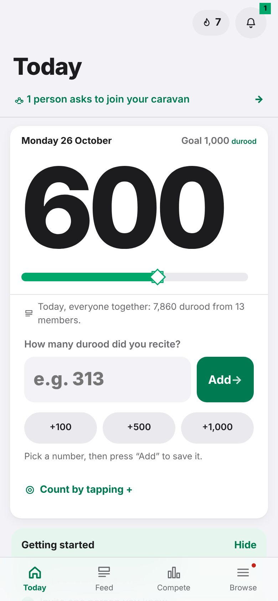
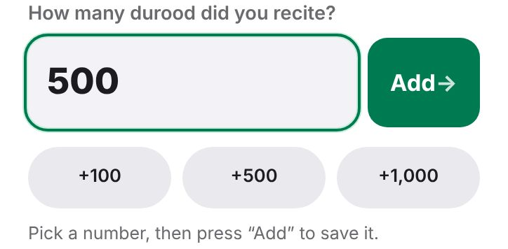
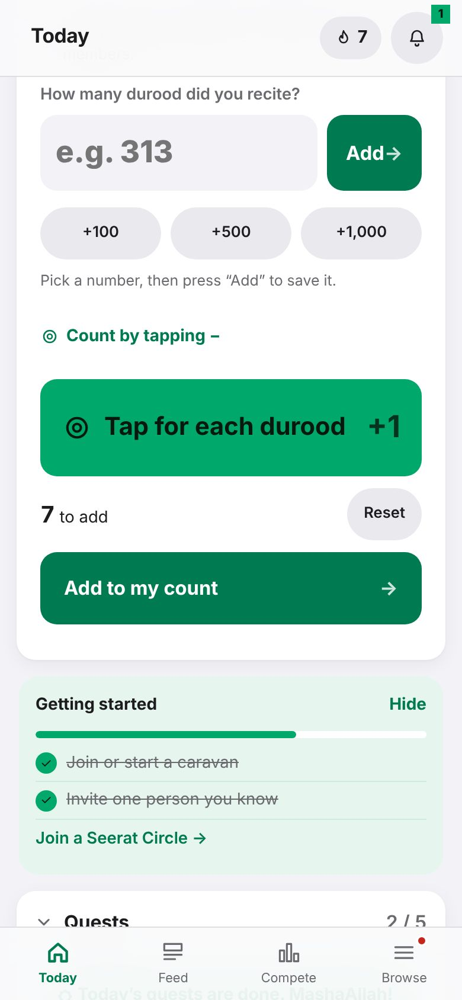
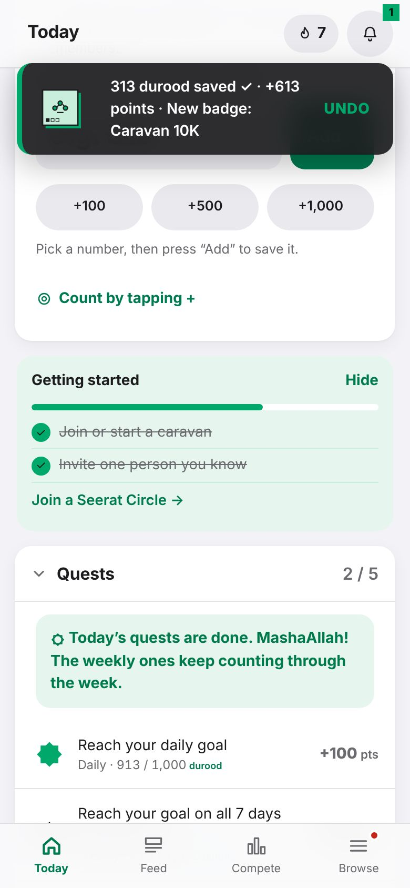
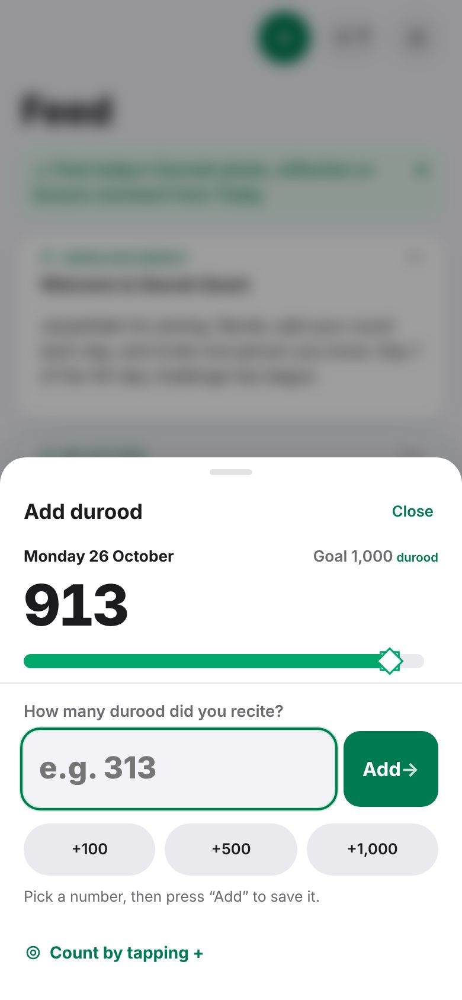

Getting started · Tutorial 3 of 13 · 3 min
Add your durood
After you recite, type how many and press Add. Or tap a quick amount, or count with your finger.
This is the heart of Seerah Quest. You recite durood in your own way, at your own time, and then add the number to the app. The big number on Today is how many you have added today.

Way 1: type the number
- Recite durood. Count it however you like: on your fingers, a tasbih, or from your usual wird.
Under How many durood did you recite? type the number, for example 313.
Or tap +100, +500 or +1,000. Each tap adds that amount to the box, so +500 then +100 makes 600.

Press Add. The big number goes up and a green message says "313 durood saved ✓".
Way 2: count by tapping
Tap Count by tapping +. A big green button appears.
Tap it once for each durood while you recite. The number to add grows with each tap. The phone gives a soft click, a stronger buzz at every 33 and a chime at every 100.
When you finish, press Add to my count. Reset starts the taps again from zero.

Pressed Add by mistake?
Right after you add, a message appears at the top with an UNDO button. Tap it within a few seconds and the number is taken back.
Missed it? You can still change today's and yesterday's numbers. See tutorial 5.

Adding from any other screen
On most screens there is a round green + at the top. It opens a small sheet with the same box, so you can add durood without going back to Today.

Add your durood anyway. The app keeps it safely on your phone and shows it straight away. It is sent by itself, once only, when you are back online.
- Days follow Pakistan time. A new day starts at midnight in Pakistan.
- Add the total at the end, or a little at a time through the day. Both are fine: the app adds them up.
- One member can add up to 50,000 in a day (10,000 a day in your first week).
- Counts are on the honour system. Recite for the sake of Allah and His Messenger ﷺ, not for ranking.